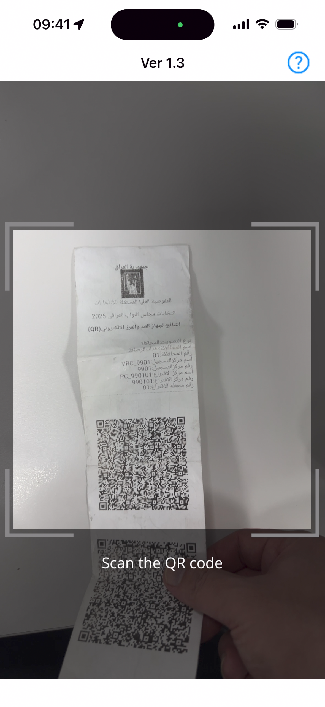
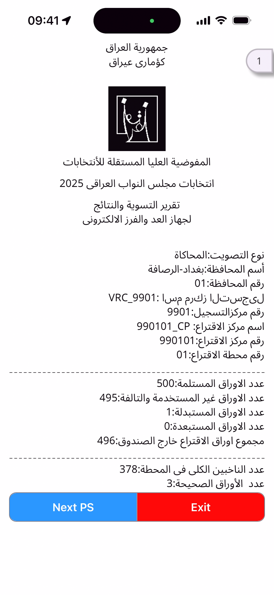
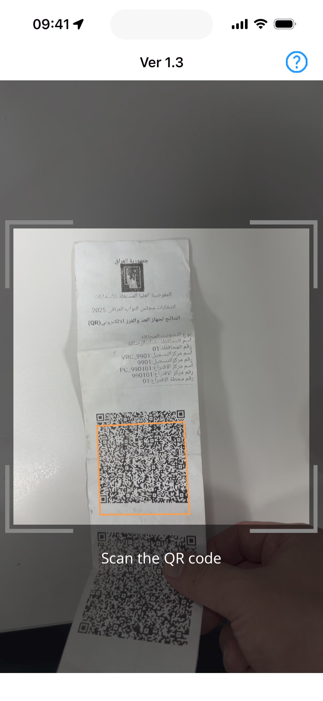

PCOS QR Report Viewer
User Manual
This manual provides basic instructions for using the PCOS QR Report Viewer application. This app allows you to scan QR codes containing election results, decrypt the data, and view detailed reports.
1. Main Screen and QR Code Scan
When you launch the app, the main screen appears. You can start scanning QR codes from here.
- Tap the 'Scan QR Code' button in the center of the screen.
- When the camera activates, align the report's QR code in the center of the screen to scan it.
- The app will automatically start processing the data upon recognizing the QR code. (A loading screen (Figure 2) may be displayed if necessary.)

Figure 1: Main Screen
Figure 2: Loading screen during data processing
2. Review Scan Result Summary
Once the QR code scanning and decryption are complete, you will be taken to the scan result summary screen. This screen displays basic information from the scanned QR codes.
- Opening QR: Opening QR information
- Closing QR: Closing QR information
- Governorate: Governorate-level QR information
- Party: Party-level QR information
- Candidate: Candidate-level QR information
To view the detailed report, tap the 'View Report' button at the bottom.

Figure 3: Scan Result Summary Screen
3. View Detailed Report
Tapping the 'View Report' button navigates to the detailed report screen. The report is organized into several tabs.
Info Tab
Displays basic information about the report (e.g., Station ID, time, etc.). You can export or share the current report as a PDF file using the 'Share PDF' button at the bottom of the screen.

Figure 4: Detailed Report - Info Tab
Governorate Tab
Selecting the 'Governorate' tab allows you to check the aggregated results at the governorate level.
Figure 5: Detailed Report - Governorate Tab
Party Tab
Selecting the 'Party' tab allows you to check the vote results by party.

Figure 6: Detailed Report - Party Tab
Candidate Tab
Selecting the 'Candidate' tab allows you to check the detailed vote results by candidate.
Figure 7: Detailed Report - Candidate Tab
4. Share Report (PDF)
From the detailed report screen (Figure 4), tapping the 'Share PDF' button will bring up the system's share menu, allowing you to share the generated PDF report via other apps (email, messenger, etc.) or save it to your device.